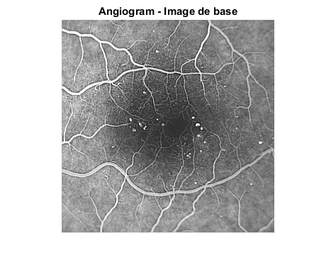
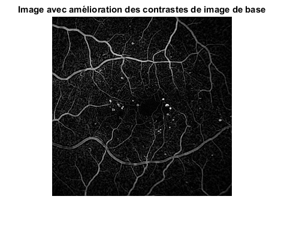
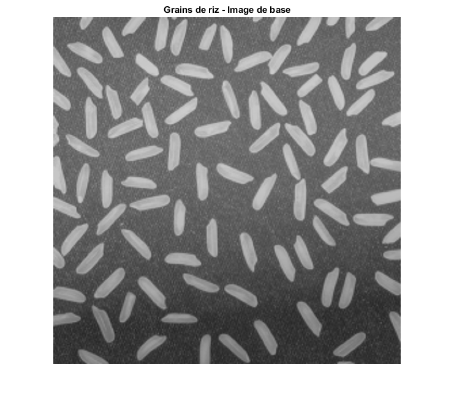
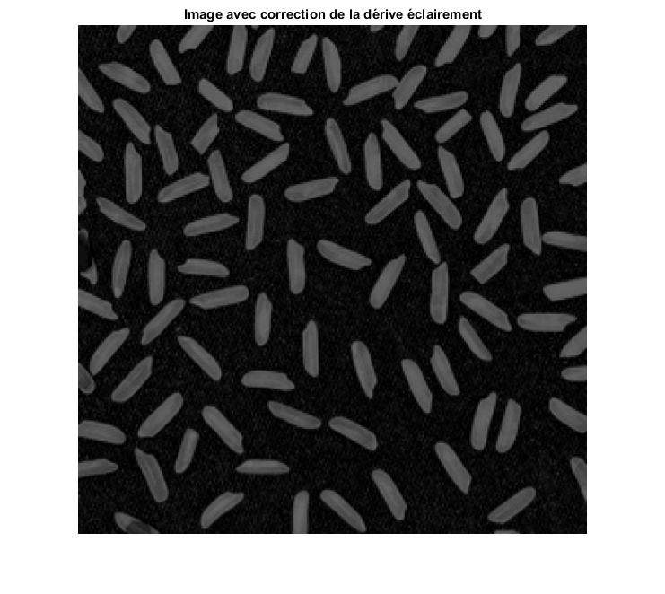
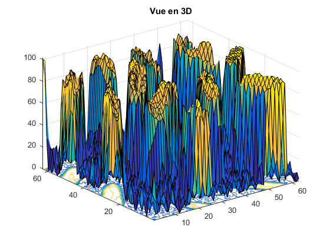

clear all;
close all;
I=imread('angiogram.png');
figure(1);
imshow(I);
title('Angiogram - Image de base');
disk=strel('disk',3);
V4=[0,1,0;1,1,1;0,1,0];
I2=imtophat(I,disk);
figure(2);
imshow(I2);
title('Image avec amélioration des contrastes de image de base');
I=imread('rice.jpg');
I=rgb2gray(I);
figure(3);
imshow(I);
title('Grains de riz - Image de base');
disk=strel('disk',20);
V4=[0,1,0;1,1,1;0,1,0];
I2=imtophat(I,disk);
figure(4);
imshow(I2);
title('Image avec correction de la dérive éclairement');
figure(5)
surfc(I2(1:4:250,1:4:250));
title('Vue en 3D');
Warning: Image is too big to fit on screen; displaying at 67%
Warning: Image is too big to fit on screen; displaying at 67%
    